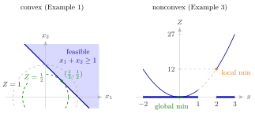

Convex Optimization Problem¶
Definition¶
An optimization problem asks for the best alternative among the achievable ones. An alternative is called a solution; it is feasible if it is achievable and infeasible otherwise, and the objective measures its quality. A generic optimization model is
Here is the vector of decision variables, each with domain ; , the and all coefficients of are parameters, and a specific choice of parameter values is an instance of the problem; is the objective function; and the inequalities are the constraints. A constraint is binding at a point if it holds with equality there.
The problem is a convex optimization problem if all functions are convex:
It is a linear optimization problem if equality holds here for every . Then every is affine, (Math VI also calls these functions linear), and the model is a linear program.
Interpretation¶
A convex optimization problem minimizes a bowl-shaped objective over a region cut out by bowl-shaped constraint functions. Its point is reliability: a feasible point that cannot be improved anywhere nearby cannot be improved at all, so a search that only looks locally does not get trapped.

The left panel is Example 1. The feasible region is a halfplane, hence convex, and the level curves of are circles around the origin, drawn for and . The smallest circle that still meets the region touches the line at , the unique optimum with ; every other feasible point lies on a larger circle. The right panel is Example 3: the same kind of convex objective , but over the feasible region (thick on the axis), with at . The gap makes , with , a local minimum, since every nearby feasible point lies to its right, while the global minimum is at .
Two facts make this work. Each set is a sublevel set of a convex function, hence convex, and the feasible region is their intersection, so it is convex too. On a convex set, a local minimum of a convex function is a global minimum, also at boundary points where constraints are binding. Both conditions are needed. The direction of the inequality matters: with convex, or a nonlinear equality, can produce a region with gaps, and then a local minimum need not be global (Example 3).
The classes are nested: linear problems are convex problems, which are special optimization problems. The vocabulary is that of OR Modelling, where models were mostly linear. A maximization is the problem , so maximizing a concave objective under convex constraint functions also fits the definition.
Convexity does not promise that an optimum exists: it only says that a local optimum, once found, is global (Example 4). Nor is every problem with convex functions a convex problem: maximizing a convex function is not one, and its local maxima can fail to be global. For linear problems there is more structure, which the theory of linear programs uses: an optimum, if there is one, sits at an extreme point whenever the region has one.
Key Results¶
- The feasible region of a convex optimization problem is convex: it is the intersection of the sublevel sets of convex functions.
- A local minimum of on the feasible region is a global minimum on it.
- If has a global minimum on the feasible region, the set of optimal solutions is convex; a convex problem therefore has no, exactly one or infinitely many optimal solutions.
- Linear optimization problems form a subclass of the convex ones. For them, a global minimum, if there is one and the feasible region has an extreme point, is attained at one of the finitely many extreme points of the feasible region.
Examples¶
1. A small convex problem. Minimize subject to , . The objective is convex (its Hessian is positive semidefinite) and the constraint function is affine, so the problem is convex. Since , every feasible point satisfies , because . Equality needs and , so is the unique optimal solution, with , and the constraint is binding there.
2. Production planning. A company makes products from resources : one unit of product uses of resource , resource has capacity , and product earns revenue per unit. The sets and the numbers are parameters; the production quantities are the variables. In the form above the model reads subject to for and for . All functions are affine, so this is a linear, hence convex, problem. One instance: two products and one resource with , , and . Every feasible plan earns , and earns , so it is optimal.
3. A nonconvex constraint (counterexample). Minimize subject to , and . The third constraint says or , so the feasible region is , which is not convex. Its constraint function is concave, not convex, so the problem is not a convex optimization problem, although the objective is convex. At every nearby feasible point has and , so is a local minimum with ; the global minimum is at .
4. Convex, but no optimum. Minimize subject to . The problem is convex and feasible, and takes values arbitrarily close to , but never , so there is no optimal solution: convexity says nothing about existence. Conversely, maximizing the convex function on is the problem , whose objective is not convex; is a local maximum with value , while the global maximum is at .
Prerequisites¶
- Optimization Model
- Convex and Concave Functions on
- Sublevel Sets of Convex Functions
- Local Minimum of a Convex Function
Related Concepts¶
- Standard Form of a Linear Program
- Optima at Extreme Points
- Set of Minimizers of a Quasi-Convex Function
- Linear Programming
- Hessian Test for Convexity and Concavity
Sources¶
- Math VI: Convexity and Optimization · Week 4
- H. E. Nusse and M. Dienstknecht, Math VI: Convexity and Optimization, lecture notes 2026–2027, Chapter 4 (introduction)
Aliases: convex program, convex optimisation problem, convex minimization problem, linear optimization problem Keywords: \min Z=f_0(\boldsymbol{x}), f_i(\boldsymbol{x})\leq b_i, local optimum is global optimum, feasible and infeasible solution, parameter and instance, general, convex and linear problems Symbols: alpha, beta, element of, gamma, real numbers, sum, union
Last updated: 5 November 2026 12:47
Convex Optimization ProblemStandard Form of a Linear ProgramOptimization ModelConvex and Concave Functions on R^nSublevel Sets of Convex FunctionsLocal Minimum of a Convex FunctionOptima at Extreme PointsSet of Minimizers of a Quasi-Convex FunctionLinear ProgrammingHessian Test for Convexity and Concavity